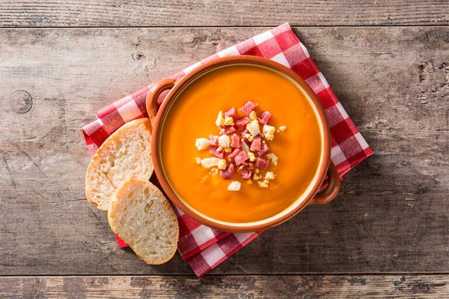

Salmorejo
Receta de Salmorejo

Ingredientes
1 kg de tomates maduros
200 g de pan (preferiblemente del día anterior)
1 diente de ajo
150 ml de aceite de oliva virgen extra
Huevo duro y jamón serrano para decorar (opcional)
Elaboración (Pasos)
Prepara todos los ingredientes
Mezcla y trituralos
Añade el aceite
Sirvelo y añade el huevo y el jamón
Volver al Index